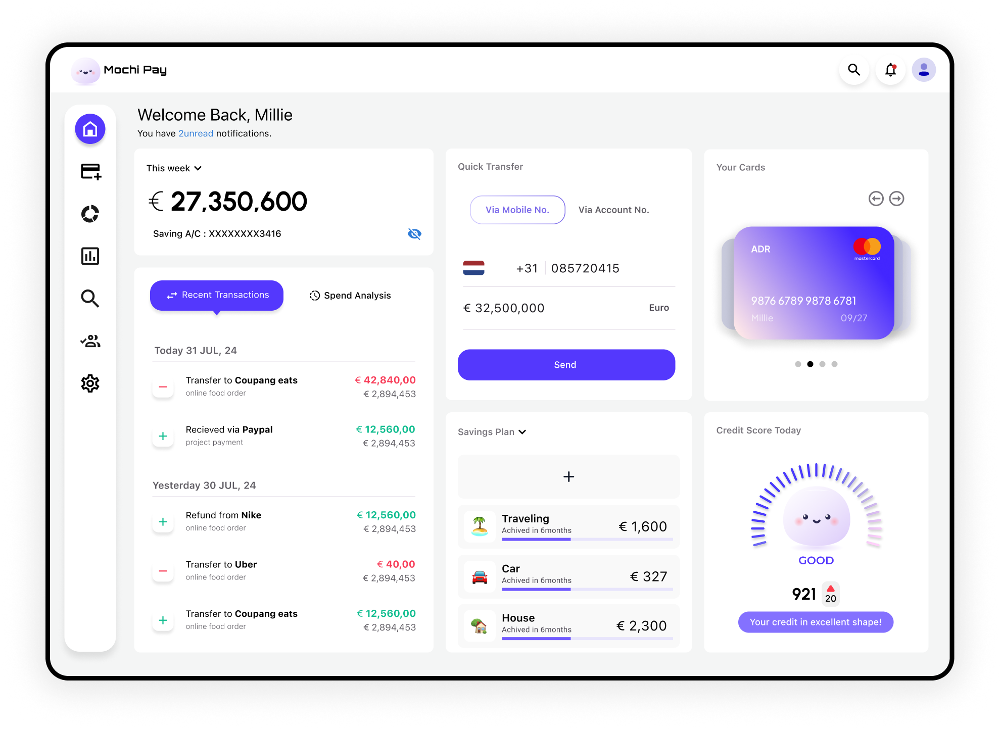
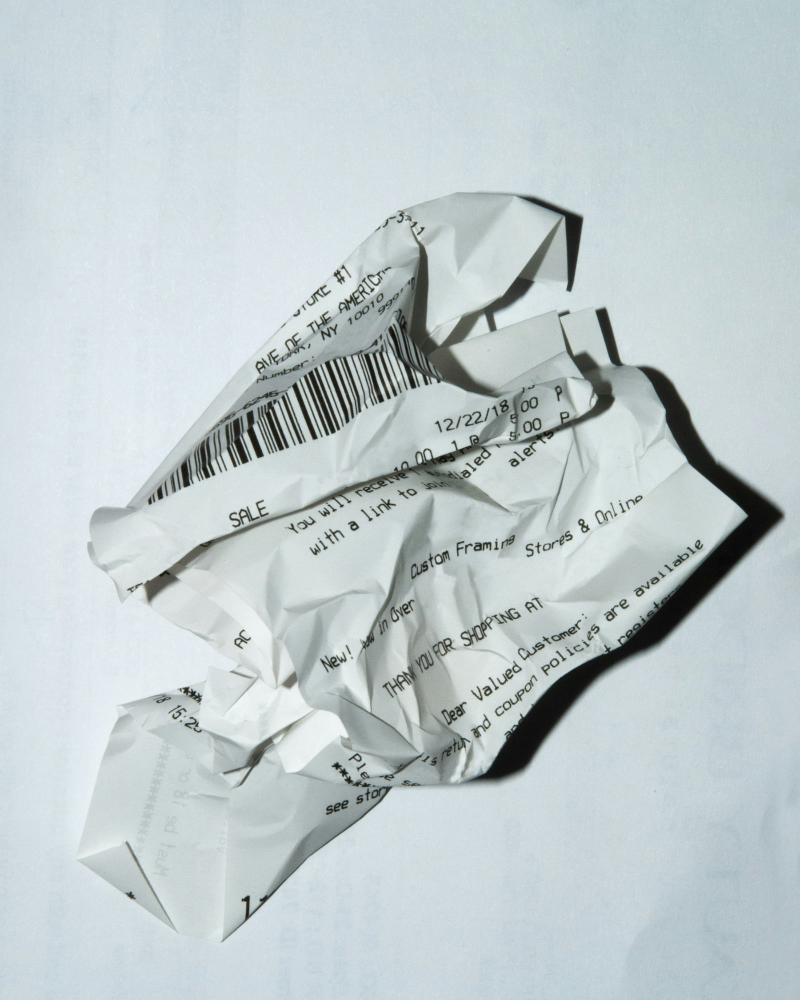
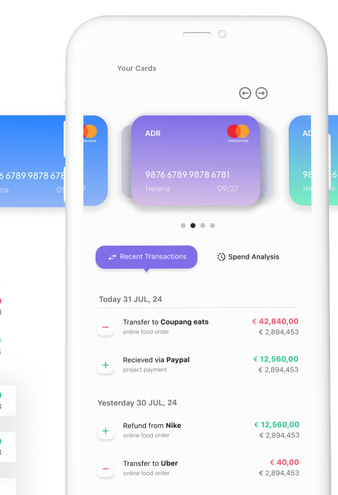
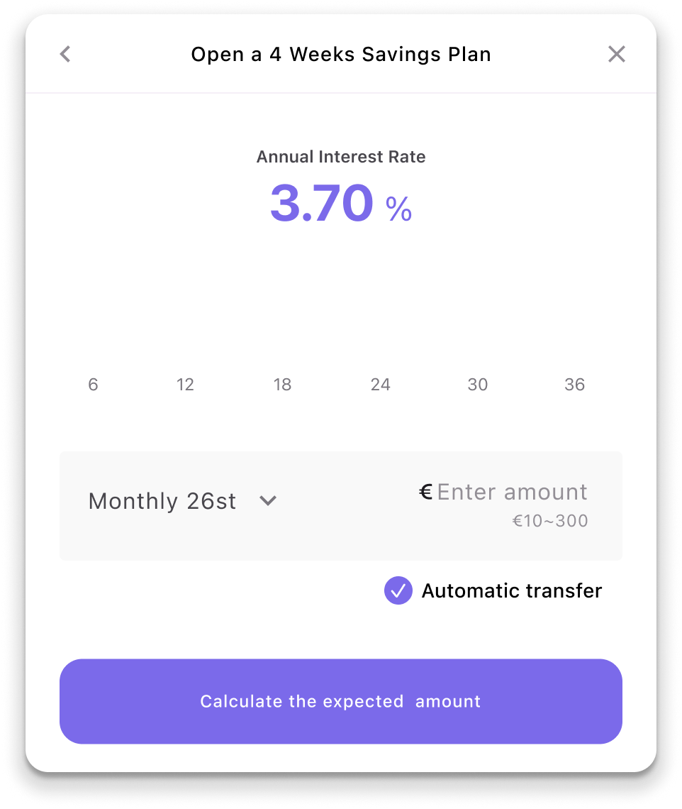

Mochi Pay — Personal Finance Dashboard
A self-directed exploration of why saving money feels so hard, and a dashboard designed to make progress visible.

€ 0I designed Mochi Pay, a self-directed personal finance dashboard, to explore a question most budgeting apps never really answer: if the math of saving is simple, why does saving still feel so hard? The product reframes saving as something you can watch happening, not just a number you're told to hit.

Saving isn't a math problem.
It's a motivation problem.
People don't fail at saving because they can't do the math. They fail because saving feels invisible and joyless.
Most budgeting tools show a number once a month and expect that to be motivating. In practice, the gap between deciding to save and actually seeing it work is where most people give up.
-
Progress feels invisible
A balance that updates once a month gives no sense of momentum day to day, so there's nothing to feel good about in the meantime. -
One-size-fits-all budgets
Generic categories like "dining" or "entertainment" don't map to what someone is actually saving for, so the numbers feel arbitrary. -
No emotional payoff
Saving is framed as restriction — what you can't spend — instead of progress toward something you chose.
How might we make saving money feel rewarding in the moment, not just as a distant future outcome?
The goal was to shrink the distance between an action — putting money aside — and a feeling of progress, so saving reinforces itself instead of relying on willpower alone.
Understanding why saving apps get abandoned.
Before designing any screens, I talked to people about their actual relationship with money — not the budget they think they should follow, but the one they actually live by. A few patterns kept coming up.

People compare "should" budgets against actual life.
Preset budget categories rarely matched how people actually thought about their spending, which made the numbers feel disconnected from reality.
Small wins mattered more than big totals.
A large end goal felt abstract and far away. What kept people engaged was noticing progress on a much shorter timescale.
Shame killed consistency.
Apps that flagged "bad" spending made people disengage entirely rather than course-correct, breaking the habit instead of reinforcing it.
Three hypotheses guided the direction of Mochi Pay.
Research findings were translated into three assumptions that shaped the design before any interface exploration began.
If people can see savings accumulate as it happens, they'll feel more connected to the outcome than to a monthly summary.
If users define their own goals instead of picking from preset categories, the numbers will feel more relevant and worth tracking.
If every deposit — no matter how small — gets acknowledged, saving will start to feel rewarding on its own, not just as a means to an end.
Design Solution
Rather than treating saving as a spreadsheet exercise, Mochi Pay was built around the feeling of watching something grow — reframing every part of the experience around progress the user can see and feel.

Goals you actually chose, not categories a bank picked.
Instead of preset budget categories, users name what they're actually saving for. Each goal has its own visual identity, so the dashboard reflects intention, not just transaction history.
A growth visual instead of a spreadsheet.
Balances are shown as a living, growing visual rather than a static number, so progress reads at a glance and updates the moment money moves.
Small deposits that feel like a win, not a chore.
Every deposit, even a small one, triggers a brief, positive moment — reinforcing the habit instead of waiting for a milestone to feel good about progress.
Celebrate the deposit, not just the goal.
A micro-celebration appears the moment money is set aside, no matter the amount — reinforcing the habit in the moment instead of asking users to wait for a milestone to feel good about progress.
Outcome: Validating the idea before the metrics exist.
As a self-directed concept, Mochi Pay's results so far come from prototype testing rather than production data. Update this section with real usability-testing results once you have them.

Reflection
Motivation is a design problem, not just a math problem. The hardest part of Mochi Pay wasn't the interface — it was resisting the urge to add more numbers. The moments that mattered most were the smallest ones: a deposit landing, a goal inching forward.